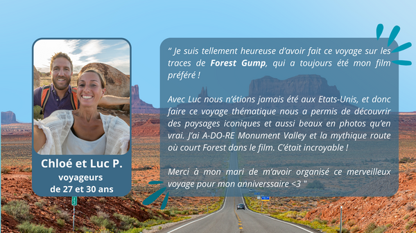

Le concept Ciné’scape
Plongez dans l'univers des films et partez à l'aventure avec Ciné'scape ! Que vous soyez un cinéphile passionné ou simplement un voyageur en quête d'inspiration, découvrez les lieux de tournage emblématiques à travers le monde. Explorez les paysages qui ont marqué l'histoire du cinéma, suivez des itinéraires immersifs, et revivez des scènes au plus près de la réalité. Rejoignez notre communauté pour partager vos découvertes et retrouver l’essence du cinéma à chaque étape de votre voyage !
Notre mission
Ciné'scape est né d'une passion commune pour le cinéma et le voyage. Notre mission : Permettre aux cinéphiles d'explorer le monde à travers les décors de leurs films préférés ! Nous sélectionnons avec soin des itinéraires de voyage authentiques, guidés par l'histoire, la culture, et le 7e art. Grâce à notre communauté grandissante, nous mettons en avant les récits, les émotions et les paysages qui composent l'univers du cinéma, pour une expérience qui s’inscrit au-delà de l’écran.
Qui peut profiter de Ciné'scape ?
Ciné'scape est conçu pour les passionnés de cinéma et les voyageurs curieux de découvrir le
monde sous un angle unique. Que vous soyez un amateur de films classiques, un explorateur
de blockbusters, ou un photographe en quête d'inspiration, notre plateforme s’adresse à vous, les
cinéphiles de tous horizons, les familles en vacances, les aventuriers solitaires ou les groupes d’amis.
Notre site offre des expériences adaptées aux goûts et attentes de chacun. Faites de vos rêves
cinématographiques une réalité, et laissez-vous guider par le cinéma à travers le monde.
Voyage en Europe
Mission Impossible - Fallout (2018)
Synopsis
Mission: Impossible - Fallout est un film d’action et d’espionnage réalisé par Christopher McQuarrie, sorti en 2018.
Après une mission échouée, Ethan Hunt (Tom Cruise) et son équipe de l’IMF (Impossible Mission Force) se retrouvent face à une course contre la montre. Un groupe terroriste connu sous le nom des "Apostles", formé des anciens membres du Syndicat, a mis la main sur trois charges de plutonium destinées à fabriquer des bombes nucléaires. Leur leader, John Lark, prépare un complot visant à provoquer un désastre planétaire.
Pour stopper cette menace, Ethan s’associe à August Walker (Henry Cavill), un agent spécial de la CIA chargé de surveiller ses actions. Mais la frontière entre alliés et ennemis devient floue lorsque trahisons et révélations s’enchaînent. Entre des courses-poursuites spectaculaires à Paris, des cascades aériennes vertigineuses, et un dénouement haletant dans les montagnes du Cachemire, Ethan doit faire face à des choix impossibles mettant en péril sa loyauté envers son équipe et ses convictions personnelles.
Le film se distingue par ses scènes d'action impressionnantes, tournées sans doublure par Tom Cruise, et un suspense palpitant qui maintient les spectateurs en haleine.
L'itinéraire du voyage
Suivez les traces d’Ethan Hunt à travers des lieux spectaculaires : des lieux de tournage chargés d’adrénaline !
Paris, France – Champs-Élysées et Pont Alexandre III
Revivez la spectaculaire course-poursuite sur l’une des avenues les plus célèbres du monde au
coeur de la capitale française.
—> Accédez à nos recommandations détaillées indiquant les meilleurs points de vue pour
photographier ces lieux emblématiques.
Londres, Angleterre – St. Paul’s Cathedral & Tate Modern
Découvrez les décors londoniens où se déroulent des scènes clés. L’interface vous propose un
itinéraire à pied reliant ces lieux, avec des informations sur les attractions voisines, comme le
marché de Borough ou les quais de la Tamise.
—> Consultez des vidéos exclusives pour en savoir plus sur les défis techniques du tournage à
Londres.
Preikestolen, Norvège (Pulpit Rock)
Gravissez cette falaise impressionnante pour revivre l’intensité du final du film. Notre carte
propose des informations sur les itinéraires de randonnée, les meilleures périodes pour visiter, et
des conseils pour immortaliser votre propre aventure avec des photos dignes d’un blockbuster.
Visite de l'Europe
Votre avis !
Voyage en Amérique
Forest Gump (1994)
Synopsis
Forrest Gump est un drame américain réalisé par Robert Zemeckis, sorti en 1994.
Adapté du roman de Winston Groom, le film raconte l’histoire émouvante et inspirante de Forrest Gump (Tom Hanks), un homme simple d’esprit mais au grand cœur, dont les aventures extraordinaires retracent plusieurs décennies de l’histoire américaine. Né dans une petite ville d’Alabama, Forrest a un faible QI, mais il compense par une détermination sans faille et une gentillesse innée. Guidé par les sages paroles de sa mère ("La vie, c’est comme une boîte de chocolats : on ne sait jamais sur quoi on va tomber"), il devient, malgré lui, un témoin actif des grands événements du XXe siècle. Forrest rencontre des figures emblématiques comme Elvis Presley, John F. Kennedy et Richard Nixon, tout en devenant une légende dans des domaines improbables, que ce soit dans le football, la guerre du Vietnam, ou même comme capitaine de bateau à crevettes. Cependant, au cœur de sa vie mouvementée, Forrest reste profondément attaché à son amour d’enfance, Jenny Curran (Robin Wright), dont le destin est marqué par des choix et des combats bien différents des siens.
Entre rires et larmes, le film explore des thèmes universels tels que l’amour, l’amitié, et la capacité de surmonter les obstacles avec une innocence désarmante.
Forrest Gump a marqué le cinéma par ses performances d’acteurs exceptionnelles, ses effets spéciaux novateurs, et son mélange parfait de drame, de comédie et d’humanité. Il a remporté 6 Oscars, dont ceux du Meilleur film et du Meilleur acteur pour Tom Hanks.
L'itinéraire du voyage
Au coeur de l’univers émouvant et inspirant d’un classique intemporel.
Chaque lieu de tournage représente un moment clé du récit et est disponible sur notre carte
interactive, agrémentée d’anecdotes, de photos, et de conseils pratiques pour vos propres
aventures.
Savannah, Géorgie – Chippewa Square
Revivez la célèbre scène où Forrest, assis sur son banc, partage ses souvenirs.
La carte interactive vous indique les meilleurs points de vue pour capturer l’ambiance unique de
cette scène culte.
Sur place, découvrez l’histoire locale de Savannah, une ville au charme intemporel, et profitez d
ses parcs verdoyants.
Monument Valley, Utah
Ce paysage mythique a accueilli la fameuse course à pied de Forrest. Notre carte vous guide à
travers les sentiers qui traversent ces formations rocheuses spectaculaires, idéales pour une
immersion dans la nature et pour des photos mémorables.
(Notre interface vous propose des sentiers balisés et des guides multimédias pour mieux
comprendre l'importance cinématographique de ce lieu. Visionnez des vidéos exclusives sur les
coulisses du tournage et découvrez des conseils pour capturer des photos parfaites de ce
paysage iconique).
Washington, D.C. – Lincoln Memorial
Revivez l’émotion du discours de Forrest sur le National Mall: un lieu riche en histoire et en culture.
—> musées gratuits à proximité
Visite de l'Amérique
Votre avis !
Voyage en Afrique
Star Wars
Synopsis
Star Wars est une saga de science-fiction épique créée par George Lucas, qui plonge les spectateurs dans une galaxie lointaine où s’affrontent le bien et le mal.
L’histoire suit la lutte entre les Jedi, protecteurs de la paix maîtrisant la Force, et les Sith, adeptes du côté obscur cherchant à dominer la galaxie.
La trilogie originale (1977-1983) raconte le combat du jeune Luke Skywalker pour devenir Jedi, renverser l’Empire Galactique et affronter Dark Vador, tout en découvrant ses véritables origines.
La prélogie (1999-2005) explore les débuts tragiques d’Anakin Skywalker, un héros déchu qui devient Dark Vador sous l’influence de l’Empereur Palpatine.
Enfin, la postlogie (2015-2019) introduit Rey, une jeune femme liée à la Force, et son combat contre le Premier Ordre, dirigé par Kylo Ren, l’héritier des Sith.
Avec ses batailles spatiales spectaculaires, ses personnages emblématiques et ses thèmes universels de courage, d’espoir et de rédemption, Star Wars a marqué des générations de spectateurs et redéfini le cinéma moderne. À travers ses séries dérivées, comme The Mandalorian ou Andor, l’univers Star Wars s’étend encore davantage, explorant de nouvelles histoires et personnages. La richesse de son univers repose aussi sur une mythologie complexe, où la Force incarne l’équilibre entre lumière et obscurité. Les décors variés, des déserts de Tatooine aux cités flottantes de Bespin, offrent une immersion totale dans une galaxie vivante et vibrante.
L'itinéraire du voyage
Tatooine: une galaxie pas si lointaine...
La saga intergalactique prend vie à travers des décors réels en Tunisie recréant ainsi la planète
désertique de Tatooine. Voyagez à travers des itinéraires spécialement conçus pour optimiser
votre voyage, pavés de détails historiques, d’anecdotes de tournage et d’astuces pour une visite
immersive.
Djerba – Maison d’Obi-Wan Kenobi
La maison de Ben Kenobi incarne le point de départ d’une aventure épique puisque c’est ici que
commence le voyage héroïque de Luke Skywalker. Une étape incontournable pour tous les
passionnés de Star Wars. Notre carte vous présente des itinéraires locaux et des points de vue
uniques pour des photos inspirées de la saga.
—> Découvrez les meilleures vues pour immortaliser votre passage
Ksar Hadada
Situé au nord de Tataouine, ce ksar (village fortifié berbère) a été utilisé pour filmer des scènes
Mos Espa dans l’Épisode I le 10 août 1997. Notre carte vous guide vers les points précis où des
scènes mémorables ont été tournées, comme celle où Qui-Gon contacte Obi-Wan par comlink.
—> Enrichissez votre visite avec des récits exclusifs sur le tournage de l’Épisode I
Nefta – Lars Homestead
Traversez les dunes de Nefta pour rejoindre l’emblématique ferme Lars et profiter d’un
expérience inoubliable sur la planète Tatooine.
—> Excursions en dromadaire et visites culturelles dans la région.
Visite de l'Afrique
Votre avis !
Oups...! Personne n'a donné d'avis sur ce voyage, soyez le premier à nous raconter votre expérience en Afrique sur les traces de Star Wars !